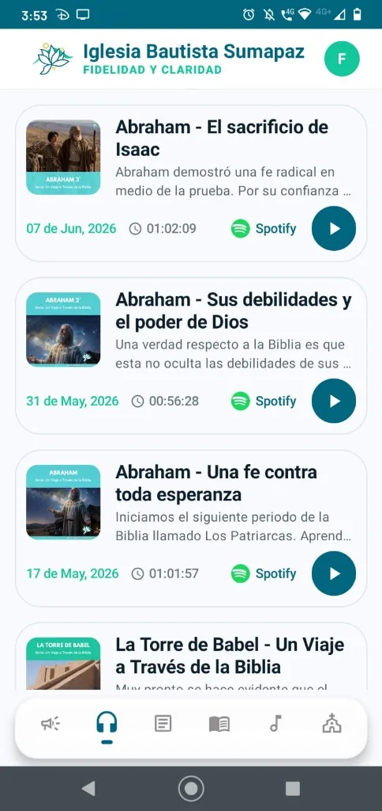
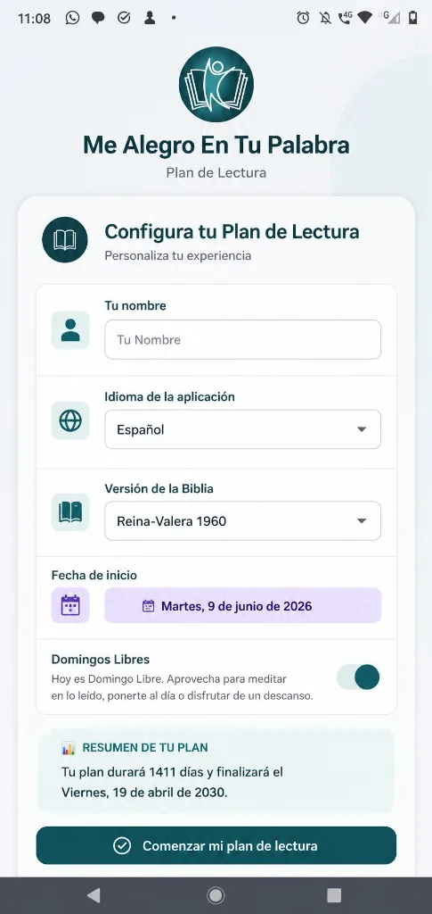
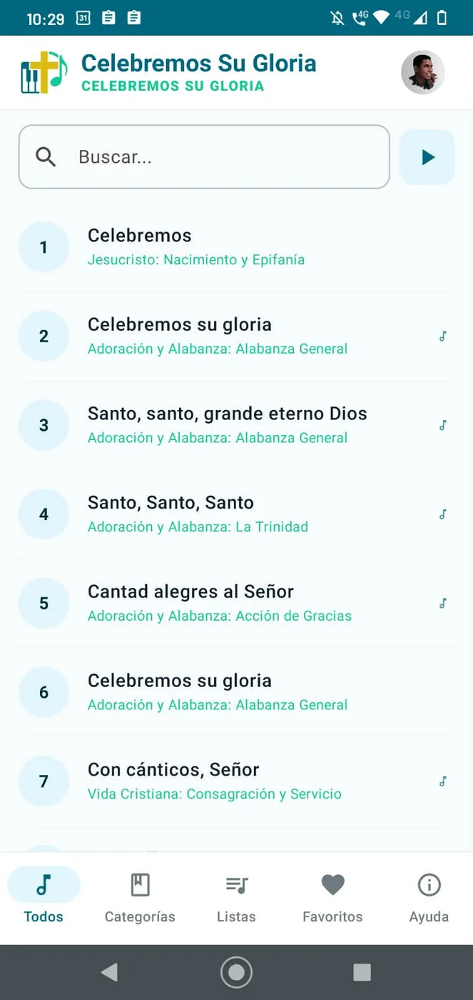

Herramientas para tu Crecimiento Espiritual
Explora nuestras aplicaciones móviles para Android, el plan bíblico anual, el himnario en línea, juegos interactivos y canales oficiales de edificación.
App Iglesia Bautista Sumapaz
Nuestra app móvil oficial para Android te mantiene conectado con las actividades, avisos y vida de la iglesia en un solo lugar.
Toda la Iglesia en tu Teléfono
Conéctate con la actividad de nuestra congregación: consulta anuncios recientes en tiempo real, reproduce los sermones en audio del podcast en Spotify, accede a reflexiones profundas de la Biblia y busca alabanzas de forma rápida con el himnario oficial integrado.

App "Me Alegro en Tu Palabra"
Acompañamiento diario y organizado para leer toda la Biblia capítulo por capítulo con reflexiones bíblicas devocionales.
La Biblia Capítulo por Capítulo
Lleva tu plan de lectura a todas partes. Marca las porciones leídas cada día para mantener tu constancia, consulta tu porcentaje de progreso, accede al texto bíblico y a reflexiones devocionales.

Himnario "Celebremos Su Gloria"
Accede a más de 600 himnos tradicionales de la fe cristiana con letras completas, listas para el canto congregacional, buscador por número o título, audios por tono y un proyector de himnos integrado.
Himnario Cristiano Interactivo
Diseñado tanto para la congregación como para directores de alabanza y músicos. Encuentra de inmediato cualquier himno por su número o título, reproduce los tonos de referencia en formato MP3 para cada alabanza y guarda tus himnos preferidos.

¿Quién quiere ser Biblionario?
Aprende y repasa las Sagradas Escrituras de forma entretenida con nuestro juego de preguntas y respuestas bíblicas.
🏆 Concurso Interactivo de Conocimiento Bíblico
Inspirado en la dinámica del concurso clásico pero 100% fundamentado en las Escrituras. Avanza a través de 15 niveles de dificultad, utiliza tus comodines bíblicos y pon a prueba tu aprendizaje individual, en familia o con tu grupo de jóvenes.
Edición Pentateuco (La Ley)
Preguntas y desafíos sobre la Creación, los Patriarcas de Israel, la liberación de Egipto, el Tabernáculo y las leyes dadas a Moisés.
Canales Digitales y Redes Sociales
Conéctate con las predicaciones, transmisiones en directo, devocionales y redes sociales de nuestra congregación.
Página de Facebook
Sigue nuestras publicaciones semanales, eventos, avisos congregacionales y transmisiones especiales en nuestra comunidad de Facebook.
Sermones en Spotify
Escucha cada semana las predicaciones expositivas de la Palabra de Dios directamente en Spotify o tu app de podcasts favorita.
Canal de YouTube
Transmisiones en directo de nuestros cultos dominicales, estudios bíblicos y grabaciones especiales en video en alta definición.
Me Alegro en Tu Palabra
Reflexiones devocionales y estudios doctrinales versículo a versículo escritos para enriquecer tu caminar con el Señor.